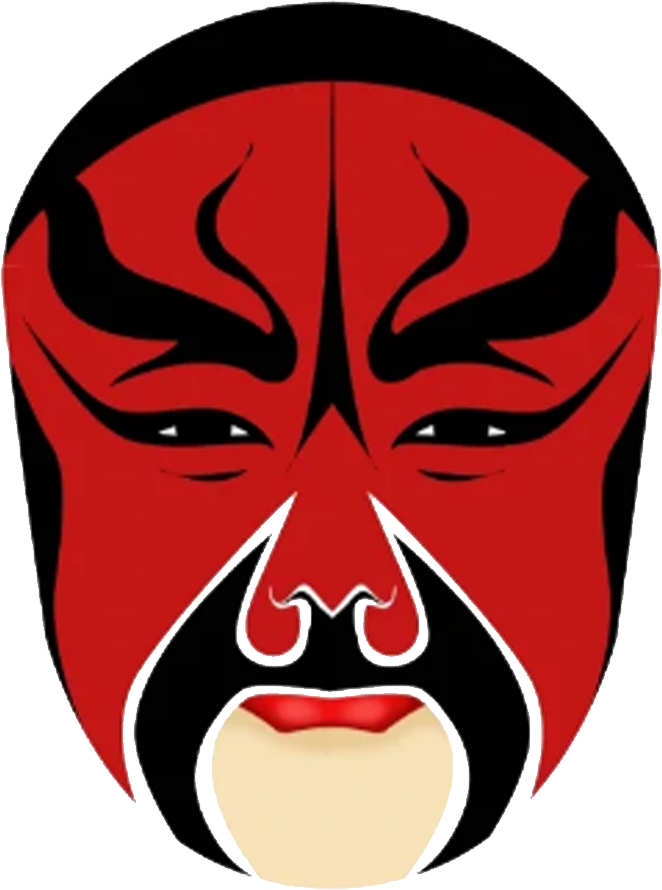
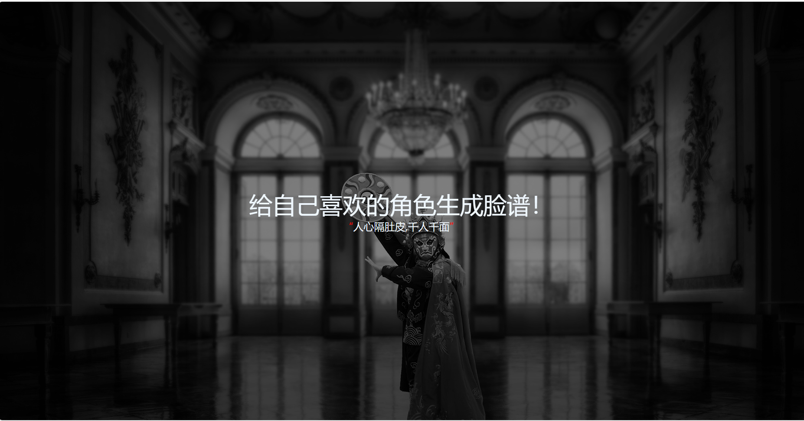
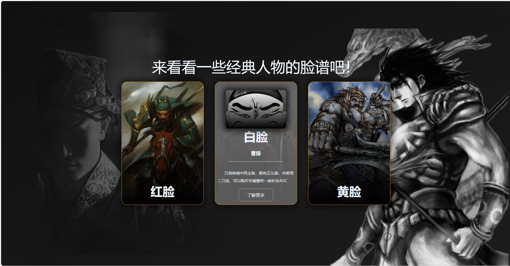
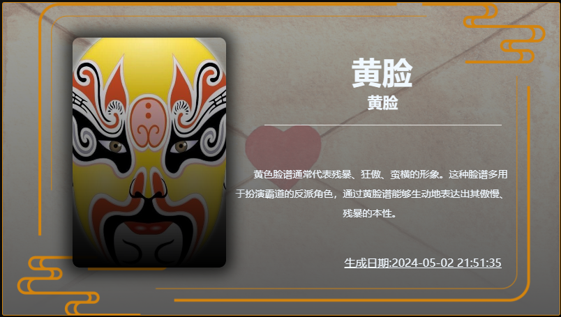
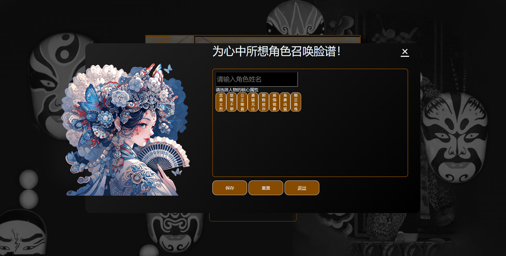

2023年12月25日
欢迎使用我们的脸谱生成网页！这是一个独特的工具，能够根据用户选择的性格特征，自动生成个性化的脸谱图案。无论你选择的是温和、勇敢、机智，还是神秘等性格，我们都为你呈现专属的脸谱设计，完美匹配你的选择。
生成的脸谱展示在精美的卡片中，页面布局简洁大方，交互体验流畅。通过现代的 HTML+CSS+JavaScript 技术，用户可以轻松选择不同性格特征，实时看到对应的脸谱设计，让你在体验艺术创造的同时感受技术的魅力。
该网页不仅仅是一个艺术生成工具，更是对中国传统脸谱文化的现代演绎。快来探索你的性格脸谱，发现独一无二的艺术表达吧！




这是一个网页项目所以你可以直接访问它！